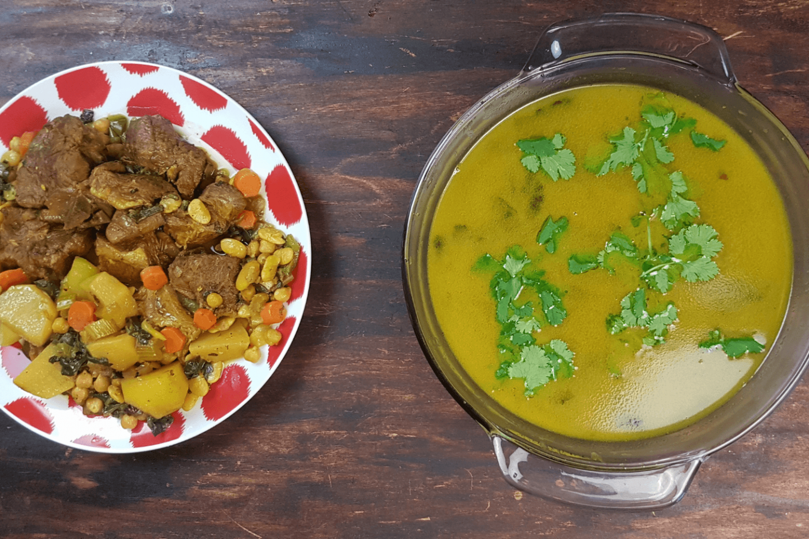

Shorwa

Shorwa (Afghan delicious soup)
Shorwa is the king of all Afghan soups.
Shorwa stands for soup in Dari and is made with meat, kidney beans, chickpeas and lots of fresh vegetables
Ingredients
- Meat, 1 kg (veal)
- ¼ cup oil
- 3 onions
- 6 cups water
- ½ cup kidney beans
- ½ cup chickpeas
- 1 chopped carrots and 1 chopped celery
- 1 chopped green pepper
- 1 cup spinach
- 1 cup chopped coriander
- 2 turnip
- 2 potatoes
- ½ tbsp. turmeric powder
Directions
- In a pressure cooker, fry onions until golden
brown.
- Add meat, turmeric powder, coriander powder,
black pepper, salt.
- Add water, kidney beans, chickpeas, and chilly
peppers (optional).
- Mix well, close pressure cooker and cook for 5
minutes on high and 25 minutes on low.
- Open the pressure valve a little bit to
release pressure slowly. Once the pressure has released, open pressure cooker and add all the fresh
vegetables: chopped carrots, chopped celery, green pepper, spinach, chopped coriander, chopped turnips,
and mix well.
- You can touch test the meat to check for
doneness at any point.
- Close the pressure cooker and cook for 5
minutes on high and 15 minutes on low or until meat is done.
- Once the pressure has released, open it, and
lastly add chopped potatoes.
- Mix well and close the pressure cooker and
cook for 5 minutes on high and 5 minutes on low.
- 10.t Once the pressure has released, open
pressure cooker and serve the soup in one and vegetables and meat in another dish.
- 11.tIn a bowl. add bread in small pieces. Add
soup, cooked meat, and cooked vegetables as much as desired. Serve with lots of fresh vegetables.